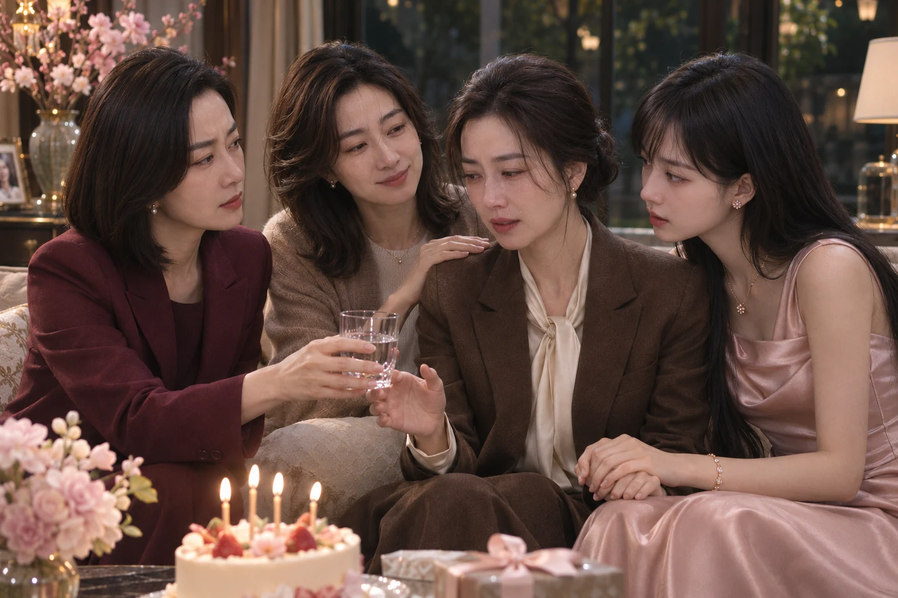
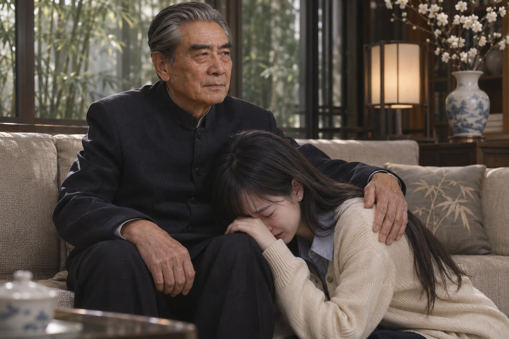
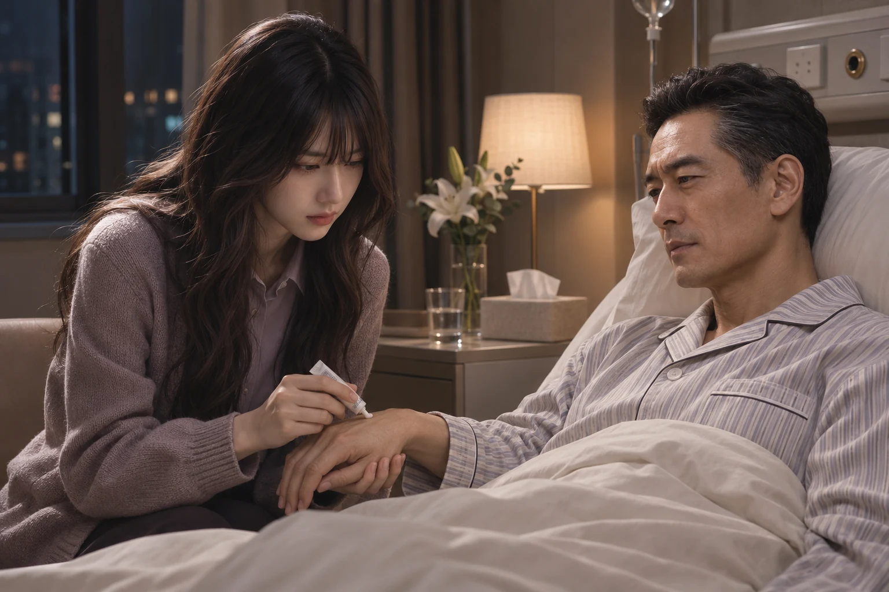
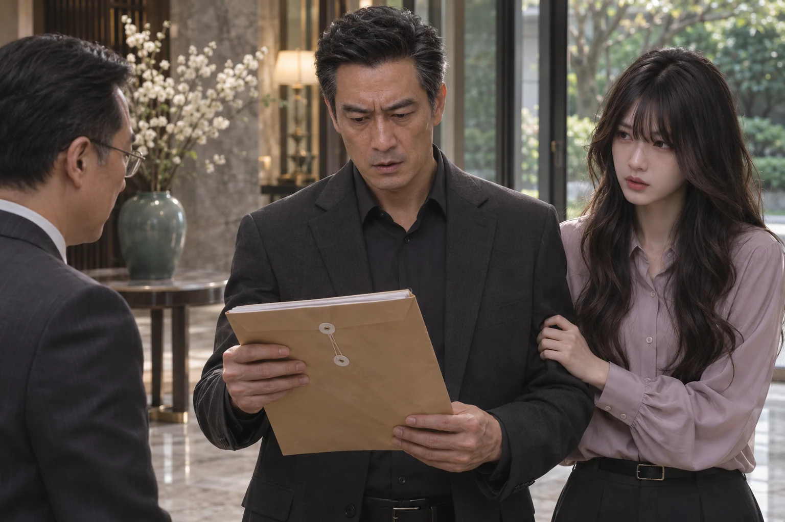

ตอนที่ 06
รอยร้าวเล็ก ๆ
โจวจิ่วระบายความเจ็บปวดผ่านน้ำตาและเสียงสะอื้นไห้อยู่นานสองนาน ซ่งอวิ๋นกอดปลอบมารดา ขณะที่ปล่อยให้น้ำตาไหลเงียบ ๆ ผู้เฒ่าซ่งพูดไม่ออก ได้แต่ตบหลังสองแม่ลูกเบา ๆ
“พี่สะใภ้ ดื่มน้ำสักหน่อยนะคะ ร้องไห้จนหายใจไม่ทันแล้ว” ซ่งเซียงรินน้ำแล้วยื่นให้โจวจิ่ว เกรงว่าอีกฝ่ายจะเป็นลมเป็นแล้งไปอีกรอบ
“ค่อย ๆ หายใจค่ะพี่จิ่ว เดี๋ยวสำลัก” เจินเหมี่ยวเอ่ยสำทับ
“ขอบใจนะอาเซียง อาเหมี่ยว” โจวจิ่วพยายามหยุดสะอื้น ดื่มน้ำให้ตัวเองรู้สึกดีขึ้น ตอนนี้ดวงตาเธอคงบวมเป่งไปหมดแล้ว แต่เธอรู้ดีว่าตัวเองอ่อนแอได้ไม่นาน เพราะยังต้องเป็นที่พึ่งพิงให้ลูกสาว

การแสดงออกของซ่งอวิ๋นทำเธอประหลาดใจ โดยปกติแล้วเด็กที่ถูกเลี้ยงดูมาอย่างอบอุ่น ครอบครัวพร้อมหน้าทั้งพ่อและแม่ จะรับเรื่องเหล่านี้ไม่ได้ กอปรกับลูกสาวเธอถูกเอาอกเอาใจมาตั้งแต่เด็ก ทั้งยังถูกวางตัวให้เป็นหัวหน้าตระกูลในอนาคต หากลูกอาละวาดขึ้นมา เธอจะไม่แปลกใจเลย แต่อีกฝ่ายกลับร้องไห้เงียบ ๆ นั่นสร้างความปวดใจให้เธอทบทวี
“อวิ๋นเอ๋อร์ ถ้าไม่ไหว.. หนูจะร้องไห้โวยวายก็ได้นะลูก ไม่ต้องเก็บมันไว้” โจวจิ่วกลัวลูกสาวกลายเป็นเด็กเก็บกด ยิ่งเป็นช่วงหัวเลี้ยวหัวต่อ กำลังจะสอบเกาเข่า เพื่อเข้ามหาวิทยาลัย เธอยิ่งเป็นกังวล
ซ่งเหวินใจร้ายกับเธอสองแม่ลูกจริง ๆ เปิดตัวลูกนอกสมรสในวันเกิดอายุครบ 18 ปี ของซ่งอวิ๋น ก่อนสอบเข้ามหาวิทยาลัยเพียงหนึ่งสัปดาห์ ทำร้ายเธอไม่เท่าไหร่ แต่เขาคิดถึงจิตใจและความรู้สึกเสี่ยวอวิ๋นบ้างหรือไม่
“หนูไม่เป็นไรค่ะแม่” ซ่งอวิ๋นปาดน้ำตา พยายามเข้มแข็งทั้งที่ดวงตาและปลายจมูกแดงก่ำอย่างน่าสงสาร
“หลานรู้เรื่องนี้อยู่แล้วใช่ไหม” ผู้เฒ่าซ่งมองออกว่าหลานสาวมีบางอย่างในใจ แต่เธอไม่ยอมพูดออกมา
“หนู.. ตอนเช้าหนูบังเอิญได้ยินพ่อคุยโทรศัพท์ เรียกแทนตัวเองว่าพ่อกับปลายสาย แต่หนูนึกว่าตัวเองได้ยินผิดไป” ซ่งอวิ๋นโกหกหน้าไม่เปลี่ยนสี คุณย่าเตือนแล้วว่าห้ามเล่าเรื่องในฝันให้ใครฟัง อึดอัดอยากพูดแค่ไหน ก็ทำได้เพียงเก็บไว้ในใจ
“พี่สาม” ซ่งจื้อตาแดงตามไปด้วย
“พี่ไม่เป็นไรจริง ๆ อาจื้อไม่ต้องกังวล” หญิงสาวยิ้มทั้งน้ำตา ลอบสังเกตปฏิกิริยา พี่รองสกุลเจียง ตอนนี้เขาก้มหน้าลงจมอยู่ในห้วงความคิด
หากให้กล่าวกันตามตรง คนที่หัวอ่อนที่สุดไม่ใช่น้องเล็กอย่างซ่งจื้อ กลับกลายเป็นพี่รองเจียงเซิน เขาถูกความน่าสงสารของซ่งหว่านจัดการจนอยู่หมัด
“อวิ๋นเอ๋อร์ไม่ต้องกังวล ตราบใดที่ปู่ยังอยู่ตรงนี้ หลานกับแม่จะไม่ได้รับความอยุติธรรมใด ๆ ทั้งนั้น” ผู้เฒ่าซ่งปวดใจ หลานสาวที่เคยร่าเริงแจ่มใส ไม่ยอมเสียเปรียบใคร กลับสามารถระงับอารมณ์และสงบได้ขนาดนี้ แสดงว่าเธอเจ็บปวดและแตกสลายอยู่ข้างใน
“หนูรู้ค่ะ คุณปู่ดีที่สุด” ซ่งอวิ๋นขยับกายลงไปนั่งกับพื้น ซุกหน้าบนขาปู่ซ่ง อันที่จริงตอนนี้เธอบอบช้ำมาก ทุกอย่างประเดประดัง ราวคลื่นลูกใหญ่ซัดเข้ามา ทำลายทุกอย่างราบเป็นหน้ากลอง
แต่เธอไม่มีวันยอมแพ้ ไม่ว่าพี่สาวนอกสมรสมีจุดประสงค์อะไร เธอจะไม่ปล่อยให้อีกฝ่ายทำสำเร็จ
ผู้เฒ่าซ่งทอดถอนใจ กางเกงเขาเริ่มเปียกแฉะเพราะหลานสาวยังคงร้องไห้เงียบ ๆ พาให้คนปวดใจจนอยากฟาดตัวต้นเรื่องอีกหลาย ๆ รอบ

“อาจิ่วตัดสินใจดีแล้วเหรอ ถ้ายังไม่พร้อมหย่าพ่อเข้าใจ แต่พ่อปล่อยให้เสี่ยวอวิ๋นไปอยู่บ้านเดียวกับเด็กคนนั้นไม่ได้ อาจิ่วเข้าใจพ่อใช่ไหม”
ผู้เฒ่าซ่งผ่านร้อนผ่านหนาวมามาก สายตาเขาจึงกว้างไกล มองออกถึงตัวตนอันแสนทะเยอทะยานและความรู้สึกด้านลบที่ซ่งหว่านมีต่อซ่งอวิ๋น หากเด็กสองคนนี้มีปัญหากัน เขานึกภาพออกว่าเจ้าใหญ่จะต้องเลือกเข้าข้างลูกที่เกิดจากหญิงอันเป็นที่รักอย่างแน่นอน
“หนูจะหย่าค่ะพ่อ ตอนนี้หนูไม่รู้แล้วว่าเรื่องไหนจริง เรื่องไหนโกหก คำพูดจากปากซ่งเหวินเชื่อไม่ได้เลย” โจวจิ่วยังคงยืนยันคำเดิม “แต่หลังจากหย่าแล้ว หนูอาจจะอยู่ในบ้านหลังนี้ไม่ได้”
“ใครว่าอยู่ไม่ได้ แม่ของว่าที่หัวหน้าตระกูลในอนาคต ต้องอยู่ในบ้านซ่งได้อยู่แล้ว” ผู้เฒ่าซ่งโบกมือเบา ๆ เรื่องนี้เล็กน้อยนัก เขาวางตัวซ่งอวิ๋นให้เป็นหัวหน้าตระกูล และอนาคตหากเธอสนใจ เขาจะดันเธอขึ้นเป็นประธานซ่ง
ซึ่งเรื่องนี้เขาเคยปรึกษาลูกสาวและลูกชายมาหลายครั้งแล้ว ลูก ๆ ต่างเห็นด้วย เพราะเห็นแววซ่งอวิ๋นมาตั้งแต่เล็ก เธอเรียนเก่ง ไอคิวสูง แต่เขาไม่รู้ว่าเรื่องที่ซ่งเหวินทำ ส่งกระทบกับสภาพจิตใจขนาดไหน
เด็กบางคนเจอเรื่องเช่นนี้แล้ว ชีวิตเป๋ไปเลยก็มีไม่น้อย..
“คุณพ่อ.. ขอบคุณนะคะ” โจวจิ่วซาบซึ้งใจ ที่ผ่านมาท่านเป็นเหมือนพ่อคนที่สองของเธอ ตอนนี้เธอไม่เหลือญาติผู้ใหญ่แล้ว อย่างน้อยท่านก็ยุติธรรม เป็นต้นไม้ใหญ่ให้เธอกับลูกพึ่งพิง เธอยังพอจะยืนหยัดขึ้นมาได้บ้าง
“เรื่องการแบ่งทรัพย์สินเดี๋ยวให้ทนายจัดการ ไม่ต้องห่วง สินสมรสนี้เจ้าลูกไม่รักดีนั่นต้องชดเชยเพิ่มเติมให้ด้วย เพราะเป็นฝ่ายมีชู้ระหว่างแต่งงาน” ผู้เฒ่าซ่งเข่นเขี้ยวเคี้ยวฟัน พูดแล้วเขายังโมโหไม่หาย
...
สมาชิกตระกูลซ่งแยกย้ายกลับบ้านตัวเองหลังจากนั้นไม่นาน ภายในรถตู้ของบ้านรอง เจียงเซินที่นิ่งมานานพูดขึ้นท่ามกลางความเงียบ
“คุณตาทำเกินไปหรือเปล่า ลุงใหญ่ทำผิดก็จริง แต่ซ่งหว่านผิดอะไร เธอเป็นสายเลือดตระกูลซ่งไม่ใช่เหรอ ทำไมคุณตาถึงไม่เมตตาเธอเลย”
“พูดอะไรของนาย!” เจียงซูเอ็ดน้องชายอย่างไม่เห็นด้วย
เจียงเซินไม่หยุดพูด “หรือไม่จริง ผู้ใหญ่ทำผิดก็ปล่อยให้เป็นเรื่องของผู้ใหญ่สิ ซ่งหว่านเลือกเกิดไม่ได้ แค่ต้องเป็นลูกนอกสมรสก็แย่พออยู่แล้ว พอพาเข้าตระกูล คุณตายังไล่ลุงใหญ่เหมือนหมูเหมือนหมา เป็นแบบนี้จะให้ซ่งหว่านคิดยังไง”
“ซ่งหว่านไม่ผิด แล้วป้าสะใภ้กับเสี่ยวอวิ๋นผิดตรงไหน? นายจะให้ปู่รับซ่งหว่านเข้ามาอย่างหน้าชื่นตาบาน โดยไม่สนใจความรู้สึกป้าสะใภ้เหรอ ตายังไม่ยึดทรัพย์สินก็ใจดีมากแล้ว” เจียงซูโมโหที่น้องชายพูดอะไรไม่คิด
นึกถึงความผิดที่ลุงใหญ่ปิดบังยาวนานนับ 20 ปี คนที่ควรสงสารที่สุดคือป้าจิ่วกับเสี่ยวอวิ๋นนั่นแหละ
ชายหนุ่มเข้าใจว่าพี่ชายพูดมีเหตุผล แต่มันยังขัดกับความคิดเขา “แต่ซ่งหว่านก็ถือเป็นน้องสาวเราคนหนึ่ง จะใจร้ายไม่ดูดำดูดีเลยได้ยังไง”
“เงียบ!! เงียบเลยทั้งสองคน เลิกเถียงกันสักที” ซ่งเซียงปวดหัวตุบ ๆ ความคิดของเธอไม่ต่างจากลูกชายคนโตเท่าไหร่ ซ่งหว่านเป็นหลานสาวเธอก็จริง แต่จะให้รับเข้าบ้านซ่งเหมือนไม่มีอะไรเกิดขึ้น พ่อของเธอไม่มีทางทำเด็ดขาด
สองหนุ่มตระกูลเจียงเบือนหน้าหนีไปกันคนละทาง
...
ค่ำคืนเดียวกันนั้น ซ่งเหวินต้องพักรักษาตัวอยู่ในโรงพยาบาลหนึ่งคืน เพื่อตรวจว่ากระดูกกระเดี้ยวในร่างกายแตกร้าวหรือไม่ โชคดีที่ตรวจแล้วไม่รุนแรงถึงขั้นกระดูกแตกร้าว แต่แผลบริเวณหน้าผากยังต้องพักฟื้น เนื่องจากแผลกว้าง แม้ไม่ลึกมากแต่มีโอกาสติดเชื้อสูง
“หนูขอโทษค่ะพ่อ เพราะหนูเป็นตัวปัญหา ทำให้คุณปู่ไล่พ่อออกจากบ้าน” ซ่งหว่านทายาตามรอยช้ำบนร่างกายผู้เป็นพ่อ น้ำเสียงหวานเกลื่อนไปด้วยความรู้สึกผิด

“ผิดแล้วเสี่ยวหว่าน ลูกเป็นของขวัญชิ้นสุดท้ายที่อาผิงทิ้งไว้ให้พ่อ ทุกอย่างเป็นความผิดของพ่อเอง ลูกเลยต้องมาเจอเรื่องแย่ ๆ แบบนี้” ซ่งเหวินฝืนทนความเจ็บปวดตามร่างกาย เอื้อมมือลูบศีรษะบุตรสาวอย่างอ่อนโยน
“แต่หนูทำให้คุณป้าโกรธ คุณป้าจะหย่ากับพ่อแล้ว พ่อกลับไปขอโอกาสจากคุณป้าเถอะนะคะ ตอนนี้หนูโตแล้ว ดูแลตัวเองได้แล้วจริง ๆ เงินที่พ่อให้ไว้ ใช้ทั้งชีวิตก็ไม่หมด”
“วางใจเถอะ อาจิ่วหย่ากับพ่อไม่ได้หรอก ผ่านคืนนี้ไปเธอก็จะคิดได้เอง อยู่ด้วยกันมายี่สิบปี ไม่เลิกกันง่าย ๆ หรอกนะ”
ตอนพูดประโยคนี้ เขามีความมั่นใจเต็มเปี่ยม ทว่าเมื่อเขาพาลูกสาวมาที่บ้านอีกหลัง กลับมีทนายของพ่อรออยู่ ซึ่งบ้านหลังนี้เขาเคยตกแต่งไว้แล้วตกลงกับภรรยาว่าจะมาอาศัยอยู่ที่นี่เพื่อเปลี่ยนบรรยากาศ
“มาทำไม..” ซ่งเหวินขบกรามแน่น ปลายเท้าเขาเริ่มชาวาบอย่างอธิบายไม่ถูก
“นี่เป็นข้อตกลงการหย่า และข้อตกลงการแบ่งทรัพย์สินครับ” ทนายวัยกลางคนพูดอย่างสุภาพ ไม่ก้าวร้าว แต่คนฟังรู้สึกได้ว่าเขาไม่มีทางถอย
“...” ซ่งเหวินนิ่งอึ้ง มองซองเอกสารในมือทนายอย่างไม่เชื่อสายตาตัวเอง
“คุณพ่อ..” ซ่งหว่านกระตุกแขนเสื้อเขาเบา ๆ เรียกสติเขากลับมา
“ฉันไม่หย่า ถ้าอาจิ่วอยากหย่าก็ให้เธอมาคุยกับฉันด้วยตัวเอง เราจะไม่คุยกันผ่านทนาย” ว่าแล้วก็ทำท่าจะดึงลูกสาวคนโตเข้าบ้าน แต่เสียงเรียบเย็นของทนายประจำตระกูลทำให้เขาเย็นวาบไปถึงไขสันหลัง
“นายท่านผู้เฒ่าฝากบอกว่า ถ้านายท่านใหญ่ไม่หย่าแต่โดยดี ทรัพย์สินที่นายท่านผู้เฒ่าเคยมอบให้จะถูกยึดคืนทั้งหมด อย่าลืมว่านายท่านเคยเซ็นสัญญาอะไรเอาไว้หลังเรียนจบ”

ซ่งเหวินแทบล้มทั้งยืน เขาย่อมจำได้ว่าลูก ๆ ทุกคนต้องเซ็นสัญญา อันเป็นข้อตกลงของตระกูล จะว่าเป็นกฎตระกูลก็ไม่ผิดนัก หลัก ๆ ข้อสัญญานั้นบอกไว้ว่าพ่อของเขามีสิทธิ์ดึงทรัพย์สิน และหุ้นกลับมา หากลูก ๆ ทำผิดกฎตระกูล
“แต่ฉันยังไม่ได้ทำผิดกฎตระกูล” เขาพยายามหาทางรอดให้ตัวเอง
“การทรยศ เป็นหนึ่งในกฎตระกูลครับ เมื่อนายหญิงโจวแต่งเข้าตระกูลแล้ว ถือเป็นสมาชิกตระกูลซ่ง..” ทนายหนุ่มใหญ่อธิบายยิ้ม ๆ “นี่เอกสารข้อตกลง อ่านให้ละเอียดแล้วค่อยเซ็นก็ได้ครับ”